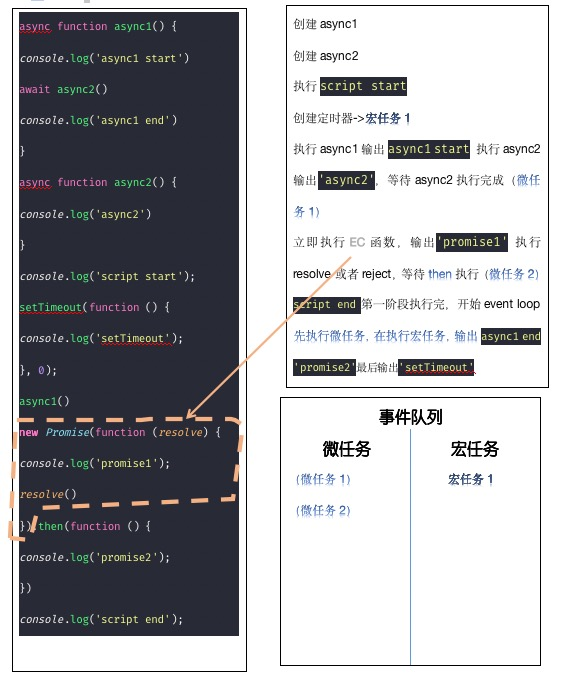

async function async1() { console.log('async1 start') await async2() console.log('async1 end') } async function async2() { console.log('async2') } console.log('script start'); setTimeout(function () { console.log('setTimeout'); }, 0); async1() new Promise(function (resolve) { console.log('promise1'); resolve() }).then(function () { console.log('promise2'); }) console.log('script end');
